手把手教你 | 刷对腮红，撩男神一路开挂
无论是职场女性还是在校女生，恋爱小心机的秘诀都要一起学起来，小葵接下来会用焕颜神器为大家演示四款妆容，尤其是腮红对于提升气色的作用，让大家都变成少女随时收获男神目光。
首先为大家揭秘一下最近超级心水的一款焕颜神器——玫琳凯纯色腮红。它的2个亮点让小葵对它爱不释手！ 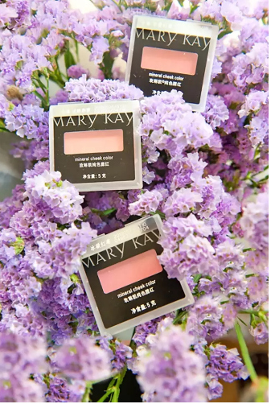颜色：玫琳凯纯色腮红有三种颜色，分别是冰凝红莓、含羞红颜、迷醉彩霞。
颜色非常好看，饱和度极佳！它能够帮你打造出清新自然的红晕，而且让妆效特别持久，与任何肤色都可以自然融合。
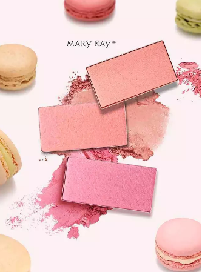质地：玫琳凯纯色腮红的粉质非常细腻，富含丰富矿物成分，可以牢牢贴合肌肤，妆效也非常持久不易脱妆。
在之后的妆容推荐中，
小葵就会为大家展示焕颜神器的效果哦~~
说到职场干练女的代表，其很多人想到的会是欢乐颂里的安迪。
在剧里她常常穿着非常干练大气，更不乏品位。比如在强势的OL着装中永远带着一点点女性柔美的细节，特别讨巧。
小心机：职场妆容小葵觉得不宜浓重，妆容要恰到好处的体现女人的硬朗与气场。
妆容即将成型的时候，千万要记住最后一个焕颜神器的使用！职业妆小葵用的是玫琳凯纯色腮红之含羞红颜。这个颜色有些深橘色，非常贴合肌肤，彰显好气色。
 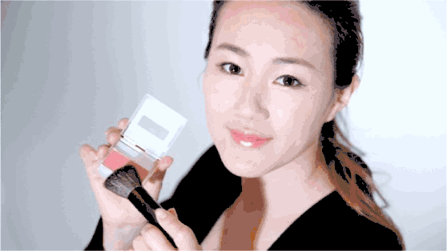
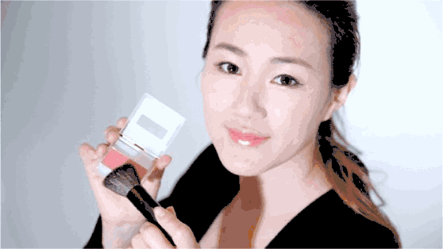
怎么画：职业妆小葵就是使用由脸颊至颧骨扫腮红的方式，这是最常见的，它的好处是可以修饰脸型并弱化颧骨，显得更加温柔。
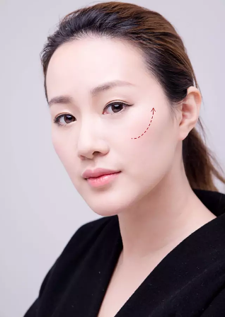怎么样，小葵的气色是不是瞬间变好了？从苍白变为有气场的职场女王，一个腮红就能完美助攻！
说完职场精英造型，接下来想说说婉约优雅的女生代表，小葵心里的最佳人选一直就是长泽雅美，她的穿搭到妆容淡淡的不张扬，美的恰到好处。
小心机：优雅派的女生可以抛开熟悉的长裙，换上牛仔，让人眼前一亮。再搭配松软的针织上衣，依然婉约优雅，而且整体会更具时髦度和品味。
除此之外让人越看越觉得好看的长泽雅美在看似不动声色的妆容上也加入了一些不可省略的亮点。就像长泽雅美也用淡淡的腮红承托出优雅的美。
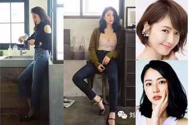小葵选择焕颜神器——玫琳凯纯色腮红之冰凝红莓。粉紫色几乎就是女人味的代名词，没有比粉红更加温婉可人的颜色了。这款腮红粉却不俗气，恰到好处的衬托出好气色，眼妆中再带一丝粉红与腮红相呼应真是让人万分怜爱~~
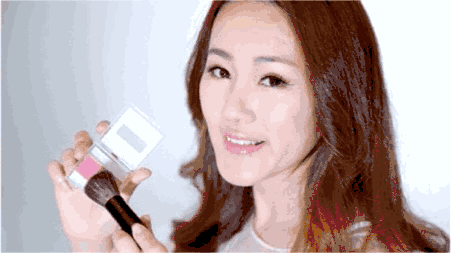怎么画：优雅可人的造型不需要棱角太过明显，小葵喜欢直接将腮红以画圈的方式涂在苹果肌上即可，切记不太涂太红了哈，适当修饰气色就好！
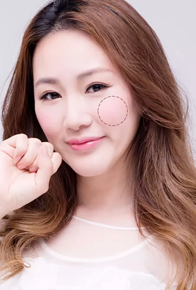看小葵腮红前的妆效，知性有余略微显老，很沧桑的感觉。一涂上腮红，整个人立马变得温婉可人，年轻了好几岁。
眼下最受少女们风靡的style变身时髦潮人感的造型，不需要太完美但少女力十足。时髦的少女太多，其中一定就有古丽扎娜。
小心机：在搭配中融入一点点牛仔元素，然后把重点全放在妆容上便可以不落潮流。本就非常有少女元气的脸上加入了一丝丝腮红的点缀,整个感觉就更加女王了。
小葵在派对时髦的妆容上选了焕颜神器——玫琳凯纯色腮红之迷醉彩霞，光听这个名字你就似乎看见夜幕降临，一个吸引众人眼球让人沉醉的女生出现在你面前。这款腮红也确如其名。
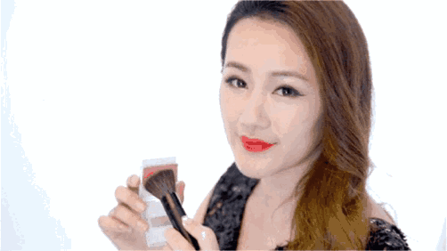怎么画：这次打腮红的方式是呈现“勾”形，将苹果肌与颧骨处都扫到颜色。
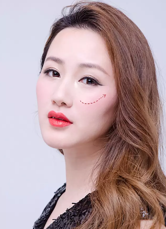哇塞，这个腮红效果太明显了，昏暗的灯光下，你的目光绝对只看得到我！！
要说一丝暖流，一定是来自如此阳光温暖的你。笑起来如同阳光一般，自然是倪妮莫属了，她的每张照片都是特别特别的暖，可以说是轻轻松松就击倒你的防线了。
小心机：活泼好动的俏皮女生不妨可以像倪妮一样换上宽松简单的上衣外套，暖暖的森女感，特别像一头小鹿般灵巧。再搭配满脸笑意的脸蛋收获到一大票追随者，那么其中隐藏的小心机一定要get起来。
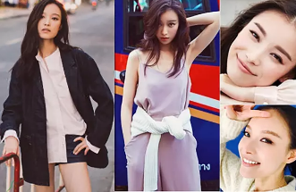笑起来要动人好看、俏皮可爱，还是腮红要给力，其实通过倪妮这张图，聪明的你可以隐约get到这款妆容的腮红重点。
小葵这里选的是玫琳凯纯色腮红之冰凝红莓，粉嫩的容颜最适合逛街happy了~~
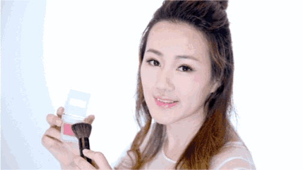怎么画：Happy的活泼少女，小葵喜欢用晒伤妆，特别俏皮可爱。要点就是从下眼睑处往颧骨处呈扇形。腮红刷小的话刷三下，刷子大的话两下即可。
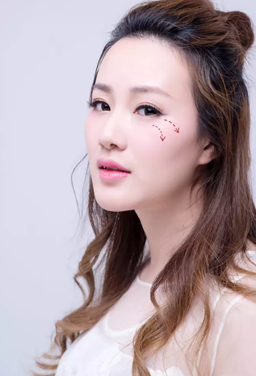小葵忽然觉得自己变得和倪妮一样可爱少女了呢~~~
所以说看到所以说看似可有可无的腮红，其实是让整个妆容出彩的重中之重，怪不得大家都称之为焕颜神器，感觉变了个人耶！
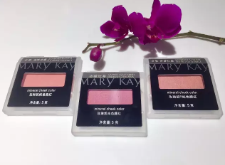